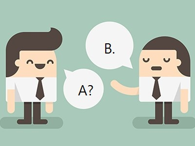

MSA 에서 유비쿼터스 언어(보편 언어)의 중요성

Health-Care Application의 MS 분리 워크샵을 진행한 후 자문해봤다.
- 보상/혜택
- Reward가 사용자에게 주어지면 그게 사용자 입장에서는? Item인가 Reward인가?
- 운동을 안해서 주는 경고도 Reward인가?
- 내가 운동을 많이 했다고 선물이 아니라 칭찬메시지가 오는 것도 Reward인가?
- 친구가 나를 역전했다고 알려주는 것이 Reward인가?
- 챌린지/목표/이벤트
- 챌린지와 목표의 차이는?
- 챌린지가 이벤트와 다른 것인가?
- 마케팅 기획이 이벤트인가?
- 챌린지를 집단으로 한다면 챌린지인가 이벤트인가?
- 포인트
- 포인트가 챌린지의 보상인가?
- 포인트가 사용자의 경험치인가?
- 운동량과 포인트는 누구에게나 동일한 비율로 적재되는가?
- 리워드 지갑/혜택 저장
- 리워드를 지갑에 넣는 순간 Item 아닌가?
- 활동/액티비티
- 걸음 등 운동만 활동인가?
- 회원 가입도 활동으로 보는가?
- 쿠폰 사용도 활동으로 보는가?
- 친구 맺기 등 소셜 기능은 활동인가?
- 활동은 정보 수집의 대상인가?
문제점 투성이다. 같은 의미로 내뱉는 말들이 제각각 다르고, 똑같은 말로 들리는데 그 의도는 다른 것이란다.
이 이름들로 API 를 구현하고 DB Table 을 정의한다면, 짬뽕 시스템이 될 것만 같다.
이를 타파할 방법은 … Ubiquitous Language(보편 언어) 다.
What ?
Ubiquitous Language(보편 언어) 는 도메인 전문가, 아키텍트, 개발자 등 프로젝트 구성원 모두에게 공유된 언어를 뜻한다.
표준 비즈니스 용어나 도메인 전문가들의 은어가 아니다. 커버 영역은 전 세계 공통, 전사 조직 등에서 소화하는 것이 아니라 프로젝트를 수행하는 조직 내부에서만 유효하다.
유비쿼터스 언어는 다양하게 사용된다.
- 구성원 간 의사소통
- 설계 모델링, UML 작성 등
- 설계를 바탕으로 구현시의 코드의 클래스명, 메소드명 정의
따라서, 유비쿼터스 언어(보편 언어) 가 도메인의 의도를 정확히 반영하고 핵심 개념이 잘 표현될 수 있도록 정의해야 한다.
Why ?
1. 커뮤니케이션의 오류는 프로젝트 진행의 병목 지점이 된다.

구성원 간 각자의 언어를 사용하는 경우, 의사소통에 비용이 든다. 상대방이 내뱉은 단어를 내가 사용하는 단어로 번역해서 이해해야 하고, 회의 내용을 공유할 때 각자 해석이 분분한 지점에 첨언을 달아야 한다.
혹은 전달받은 정의서대로 구현을 마치고 나면, 그 결과가 아니라고 할 때가 있다. 정의서를 펼쳐놓고 얼굴 맞대로 얘기하면 그제야 어디서 어긋 낫는지 파악된다. 재작업의 연속이다.
2. MSA를 도입한 조직에서 언어는 업무 범위와 책임을 정의한다.

Bounded Context는 Ubiquitous Language(보편 언어) 로 정의된 모델을 기반으로 경계를 만든다. MSA에서 각각의 마이크로 서비스는 Bounded Context와 대응된다. 그리고 마이크로 서비스는 담당 조직의 규모, 기술 스택, 책임 등에 매우 연관이 깊다.
즉, Ubiquitous Language(보편 언어) 가 조직에 영향을 끼친다.
How ?
용어 사전을 만든다.
Wiki 등 다양한 형태로 도메인 전문가, 아키텍트, 개발자 등 프로젝트 구성원이 모여 용어 사전을 만든다. 워크샵의 형태가 적당하다.(MS 분리 워크샵 등)
약어나 코드 값 등 직관적으로 이해가 되지 않는 내용은 줄이고 Full Name을 사용한다.
특정 형식 없이 그림 등의 형태로 관리한다.
만들어진 용어 사전은 모두가 편히 접할 수 있는 곳에 위치한다.
Ubiquitous Language(보편 언어) 를 사용한다.
도메인 모델링, UML 다이어그램 작성시 Ubiquitous Language(보편 언어) 를 사용한다.
구성원 간 커뮤니케이션에 이를 활용해 텍스트 뿐만 아니라 소리내어 사용한다.
커뮤니케이션, 문서만 아니라 코드에도 Ubiquitous Language(보편 언어) 를 녹여서 구현한다.
Ubiquitous Language(보편 언어) 를 지속적으로 발견하고 발전시킨다.
프로젝트 진행 중에 구성원 간에 용어에 대한 의견을 개진하고 지속적으로 갱신한다.
용어를 처음 정한 형태로 계속 사용하지 않아도 된다. 이를 문서, 코드 등에도 갱신하고 최종적으로 모델링과 코드에 잘 담겨 있어야 한다.
이를 위해 짧은 주기로 반복 개발/검증하는 에자일 개발 프로세스가 적합해 보인다.
주기적으로 Ubiquitous Language(보편 언어) 를 갱신, 모델링 UML 다이어그램에 반영하고 코드에 녹여낸다. 그 후 피드백하는 과정을 반복한다.
Conclusion
프로젝트에서 언어의 중요성은 아무리 강조해도 모자라다.
특히 MSA 를 적용한 개발팀은 언어 정의에 따라 업무 범위와 책임이 구별되는 만큼 중요하게 생각해야 한다.
모두가 함께 쓰는 공통 언어 + 중의적 의미가 제거된 명확한 언어 + 번역이 필요없는 언어를 추구하자.
추가로, Ubiquitous Language(보편 언어) 는 Domain Driven Design 을 언급할 때 함께 설명된다.
Domain Driven Design 도 같이 알아볼 필요가 있다.